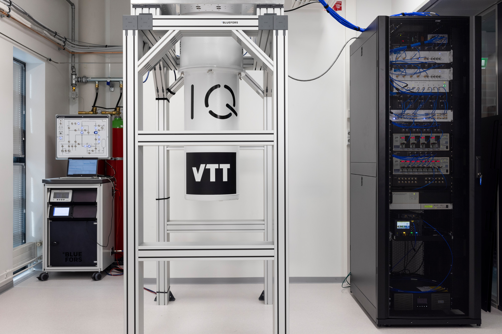

Tutorial - Introduction to Helmi with qiskit
Helmi is a 5 qubit Quantum Computer that is co-developed by VTT and IQM. It uses superconducting transmon qubits in a star shaped topology. Helmi’s natives gates consist of the phased-rx and controlled-z gates. This architecture is called Adonis by IQM.
In this tutorial running on Helmi is demonstrated using the Qiskit framework by utilising the qiskit-on-iqm adapter. You can also run on Helmi using Cirq with cirq-on-iqm adapter, and this is described in a separate notebook. These notebooks are intended to be run on notebooks.csc.fi which has access to run on Helmi. Additional documentation for notebooks.csc.fi can be found here.
Here is Helmi! It is located in Espoo, Finland.
{kind=link}
Setup
This notebook uses the following requirements.
qiskit-iqm==10.4
iqm-client==13.0
qiskit[visualization]
PennyLane-qiskit @ git+https://github.com/NordIQuEst/pennylane-qiskit@support-num-qubits
Using Helmi with Qiskit
First we import qiskit-on-iqm which is needed to run on Helmi with qiskit. You can read the user guide here.
from qiskit_iqm import IQMProvider
import networkx as nx
from qiskit import QuantumCircuit, QuantumRegister, execute, transpile
from qiskit.tools.monitor import job_monitor
from qiskit.visualization import plot_histogram
Then connection to the backend is simple! For this we point the IQMProvider at what is called the “cocos URL”. The cocos url to access Helmi is provided below.
provider = IQMProvider("https://qc.vtt.fi/cocos")
backend = provider.get_backend()
Now that we have the backend connected to Helmi, let’s print out some information about Helmi!
print(f'Native operations: {backend.operation_names}')
print(f'Number of qubits: {backend.num_qubits}')
print(f'Coupling map: {backend.coupling_map}')
Visualising the topology with networkx:
G = nx.Graph()
G.add_edges_from(backend.coupling_map)
node_labels = {node: f"QB{node + 1}" for node in G.nodes}
nx.draw(G, labels=node_labels, node_color='skyblue', node_size=500, font_size=10)
Constructing and executing quantum circuits
Circuits are constructed and submitted to Helmi using the same methods as with IBM machines. First we construct a Bell pair circuit between 2 qubits. The circuit is then executed on the backend using the execute function.
circuit = QuantumCircuit(2, name='Bell pair circuit')
circuit.h(0)
circuit.cx(0, 1)
circuit.measure_all()
circuit.draw(output='mpl')
Executing the circuit on Helmi
When submitting a job to Helmi a unique identifier for your job is returned. This can be used to gather additional information about the circuit you just submitted and the results. You should save your job ids!
job = execute(circuit, backend, shots=100)
print(f"Job ID: {job.job_id()}.")
print("Tracking execution of job:")
job_monitor(job)
After submitting, the job is now running. The status of the job can be queried using job.status(). Using the job id, you can retrieve previous jobs.
status = job.status()
print(status)
#old_job = backend.retrieve_job(job_id)
Explicit Transpilation
Instead of using the execute function you can also be explicit about your transpilation.
transpiled_circuit = transpile(circuit, backend=backend, layout_method='sabre', optimization_level=3)
transpiled_circuit.draw('mpl')
For the more control, you can also specify the initial layout in both transpile and execute. For example, Helmi’s topology only allows 2 qubit gates between the central and outer qubits. Therefore we can map the 2 qubit gate to QB3. For this we make use of the QuantumRegister.
qreg = QuantumRegister(2, "QB")
circuit = QuantumCircuit(qreg, name='Bell pair circuit')
circuit.h(qreg[0])
circuit.cx(qreg[0], qreg[1])
circuit.measure_all()
# Qubit numbers start at 0 index whereas the qubit names start at 1 index.
qubit_mapping = {
qreg[0]: 1, # Map the first qubit to QB1
qreg[1]: 2, # Map the second qubit to QB3
}
job = execute(circuit, backend, shots=100, initial_layout=qubit_mapping)
Qiskit refers to qubits using integer indices, whereas IQM uses strings. The backend class provides utility methods for mapping them to one another. Let’s see on which physical qubits the logical circuit qubits were mapped.
mapping = {}
for qubit in circuit.qubits:
index = circuit.find_bit(qubit).index
mapping[index] = backend.index_to_qubit_name(index)
print(mapping)
Results
Results can be printed once the job has completed. If results are queried before the job has completed then an error will be returned.
result = job.result()
print(result.job_id) # The job id can be queried from the result
print(result.get_counts())
#print(result.get_memory())
plot_histogram(result.get_counts())
Additional metadata about the executed job can also be found.
exp_result = result._get_experiment(circuit)
print("Job ID: ", job.job_id()) # Retrieving the submitted job id
print(result.request.circuits) # Retrieving the circuit request sent
print("Calibration Set ID: ", exp_result.calibration_set_id) # Retrieving the current calibration set id.
print(result.request.qubit_mapping) # Retrieving the qubit mapping
print(result.request.shots) # Retrieving the number of requested shots.
print(exp_result.header)
Simulating circuits locally with noise
Qiskit on IQM provides an IQMFakeBackend with IQMFakeAdonis for simulating Helmi.
from qiskit_iqm import IQMFakeAdonis
fake_backend = IQMFakeAdonis()
job = execute(circuit, fake_backend, shots=1000)
job.result().get_counts()
The error profile of the noise can be queried and customised by the user following the qiskit-iqm user guide.
print(fake_backend.error_profile)
Batch execution
Helmi also allows for batches of circuits to be submitted with 1 call to the quantum computer. A batch is simply a list of QuantumCircuits. This is often faster than executing circuits individually, however, circuits will still be executed sequentially. On Helmi currently you can only place a maximum of 20 circuits in one batch. All circuits in a batch are executed with the same number of shots. The maximum number of shots per circuit is 100,000.
Batch submission of circuits allows parameterized circuits to be executed using the qiskit.circuit.Parameter class.
circuits_list = []
circuit_1 = QuantumCircuit(2, name='Bell pair circuit')
circuit_1.h(0)
circuit_1.cx(0, 1)
circuit_1.measure_all()
circuits_list.append(circuit_1)
circuit_1.draw(output='mpl')
circuit_2 = QuantumCircuit(2, name='Reverse Bell pair circuit')
circuit_2.h(1)
circuit_2.cx(1, 0)
circuit_2.measure_all()
circuits_list.append(circuit_2)
circuit_2.draw(output='mpl')
# Execute and monitor job
job = execute(circuits_list, backend, shots=10, optimization_level=0)
print("Tracking execution of job:")
job_monitor(job)
# Get results
result = job.result()
# Plot histograms
plot_histogram(result.get_counts(), legend=['Circuit 1', 'Circuit 2'])
Pennylane Qiskit
You can also run Pennylane code on Helmi with the PennyLane-Qiskit Plugin. The IQMBackend object uses BackendV2 currently which Pennylane-Qiskit does not support, therefore we use a forked-version that fixes this.
import pennylane as qml
provider = IQMProvider("https://qc.vtt.fi/cocos")
backend = provider.get_backend()
dev = qml.device('qiskit.remote', wires=5, backend=backend, shots=10)
print(dev.capabilities())
@qml.qnode(dev, interface="autograd")
def circuit(params):
qml.RX(params[0], wires=0)
qml.RY(params[1], wires=0)
return qml.expval(qml.PauliZ(0))
print(circuit([0.54, 0.12]))
Summary
In this notebook we have demonstrated how to connect and run circuits on Helmi with Qiskit, qiskit-on-iqm and the PennyLane-Qiskit plugin.
Additional Reading
Long-distance transmon coupler with CZ gate fidelity above 99.8%. Paper by IQM describing the superconducting technology behind Helmi.
qiskit-on-iqm documentation. We are running
10.4.